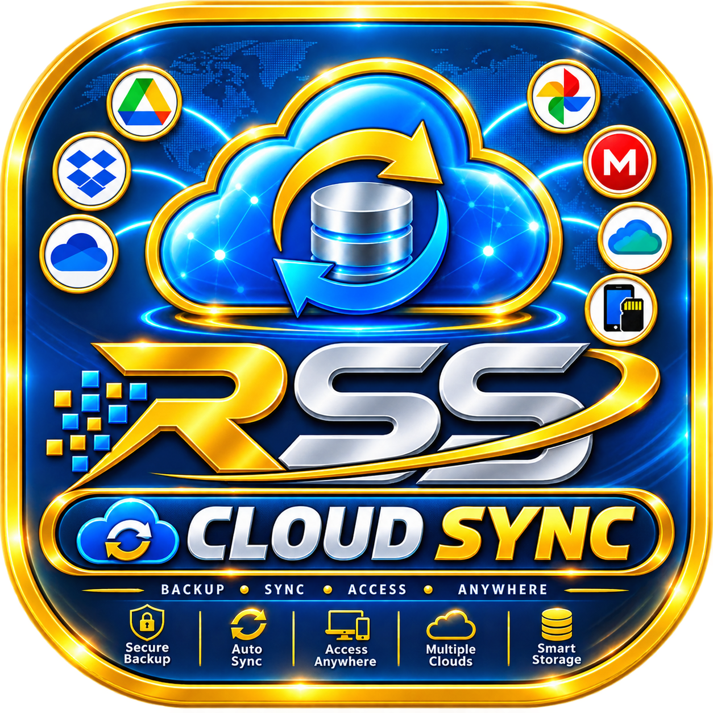

Flexible sync methods
Two-way, upload, download, mirror and other workflows support different backup and synchronization needs.

Lightweight Android cloud synchronization designed around reliable folder pairing, flexible sync methods and a clean experience.
Two-way, upload, download, mirror and other workflows support different backup and synchronization needs.
Designed around supported providers including Google Drive, OneDrive and Dropbox.
A compact interface focused on efficient background operation and practical controls.
Understand synchronization activity through clear history and status information.
Light, Dark and System appearance options keep the interface comfortable across devices.
Exactly two online membership tiers, with advanced capabilities reserved for Premium.
v1: establish reliable mobile synchronization and a clear user experience. v2: expand into a stronger cloud-sync platform with account, Premium and advanced service capabilities.
Developed by Razeen Secure Solution.